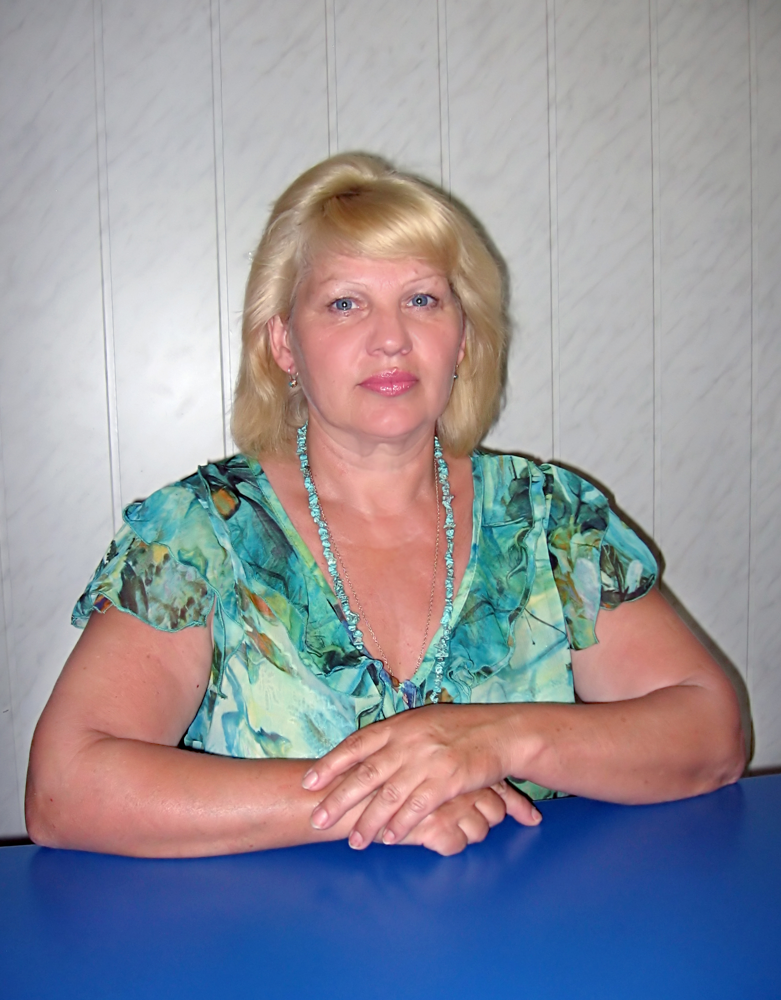
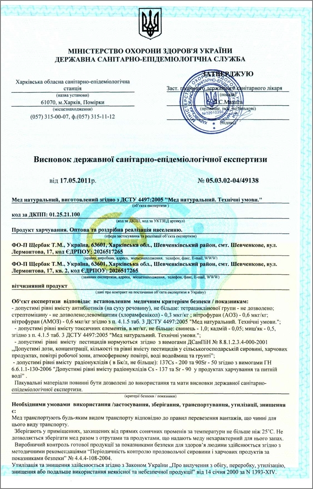
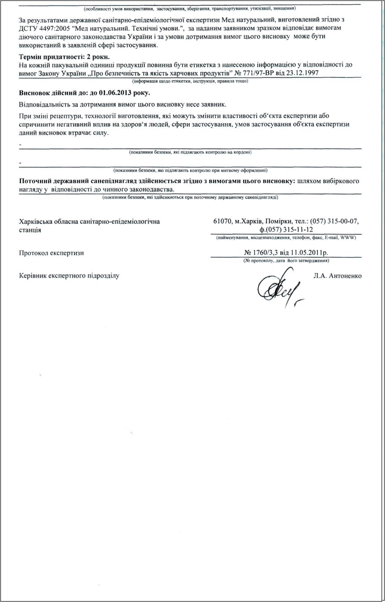
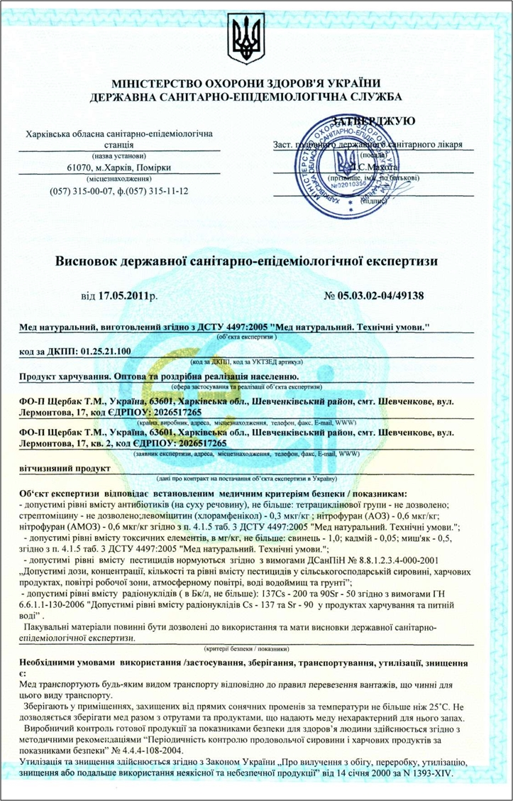
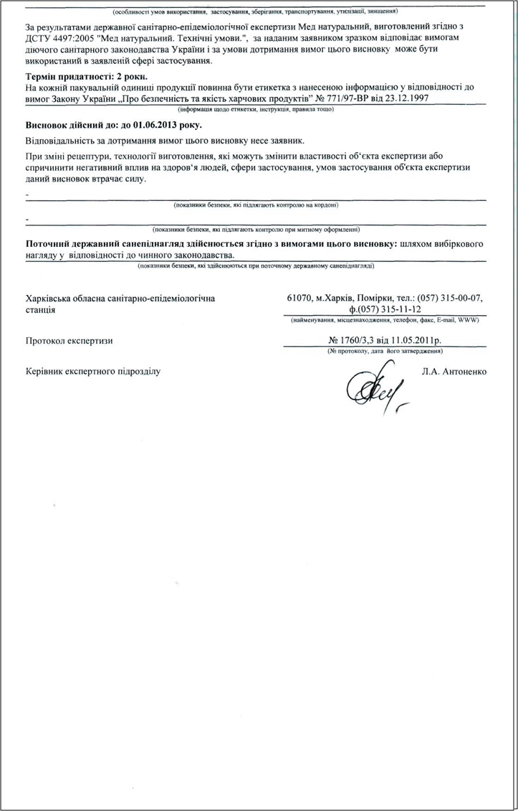

ФЛП Щербак Т.Н. - предприятие по переработке продуктов пчеловодства. На базе современных технологий производится обработка и расфасовка более чем 10 видов натурального меда в разнообразную тару. Предприятие имеет в своей структуре современный цех, фасовочные линии которого полуавтоматизированы. Производственный процесс соответствует современным требованиям пищевой промышленности. Продукция пользуется спросом на национальном рынке.
Мед ТМ «Дідова Пасіка» - лауреат областного конкурса « Лучшая продукция ХАРЬКОВЩИНЫ» 2011 года! Это экологически чистый продукт, который не содержит консервантов. В своем составе мед натуральний имеет более 70 органических веществ, важных для жизнедеятельности организма человека. Мед произведен из нектара медоносных цветов экологически чистых регионов Украини. Мед расфасовывается в стеклянную и пластиковую тару, что обеспечивает защиту от кислорода, потери влажности и ароматических веществ. Удобство фасовки и полезность продукта, изысканный дизайн, порционная дозировка, доступная цена – вот что привлекает наших покупателей. Реализация в оптовых и розничных торговых точках. Мед ТМ «Дідова Пасіка» пользуется популярностью у конечных потребителей, которые в свою очередь отметили нетрадиционную фасовку и удобство в использовании продукции нашей торговой марки.


Висновок СЕС
 
Мед ТМ «Дідова Пасіка» - лауреат областного конкурса « Лучшая продукция ХАРЬКОВЩИНЫ» 2011 года! Это экологически чистый продукт, который не содержит консервантов. В своем составе мед натуральний имеет более 70 органических веществ, важных для жизнедеятельности организма человека. Мед произведен из нектара медоносных цветов экологически чистых регионов Украини. Мед расфасовывается в стеклянную и пластиковую тару, что обеспечивает защиту от кислорода, потери влажности и ароматических веществ. Удобство фасовки и полезность продукта, изысканный дизайн, порционная дозировка, доступная цена – вот что привлекает наших покупателей. Реализация в оптовых и розничных торговых точках. Мед ТМ «Дідова Пасіка» пользуется популярностью у конечных потребителей, которые в свою очередь отметили нетрадиционную фасовку и удобство в использовании продукции нашей торговой марки.
Висновок СЕС
 